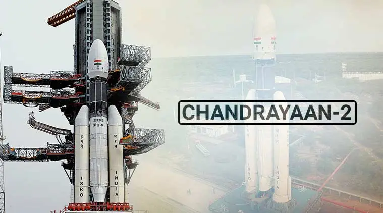

Chandrayaan-4 is an upcoming lunar sample return mission by ISRO, slated for launch around 2027. This ambitious project aims to bring back up to 3 kilograms of lunar regolith from the south pole region near Statio Shiv Shakti. It incorporates advanced technologies like multiple launches, robotic capabilities, and in-space docking.
| Mission Type | Lunar Sample Return |
|---|---|
| Launch Date | Expected 2027 |
| Mission Modules | Propulsion Module, Lander Module, Ascender Module, Transfer Module, Re-entry Module |
| Launch Vehicle | LVM3 (Two launches) |
| Landing Site | Near Statio Shiv Shakti (South Pole) |
| Sample Collection | 2-3 kg of lunar regolith |
| Technology | Multi-launch, docking, robotic sample collection, return and re-entry |
| Government Approval | ₹2,104.06 crore (US$250 million) |
| Mission Duration | 36 months (from approval to completion) |
| Orbit | Lunar and Earth orbits |